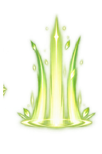
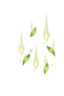

Heal Animation Component Inventory
Code-backed inventory for the current heal-up-sync-v9 runtime. The checkerboard reveals each source image's transparent area. Labels below describe the shipping render path rather than a separate mock.
Disparity found
The one-hero QA replay never renders the party-only layer. A real party heal such as Magic Fruit can render vfx_group_heal_rain.png, whose artwork contains three downward beams. That is the clearest source of the green rain visible in play.
Active in the single-hero heal replay

36
Active only when more than one hero heals
Retired or inactive assets

Runtime layer order
| Order | Layer | Visible components | Condition |
|---|---|---|---|
| 1 | Canvas back | Group Heal Rain, ground sigil, fountain body | Rain requires 2+ active blooms; sigil and fountain require one active bloom. |
| 2 | Canvas actor | Hero sprite | Normal hero render. |
| 3 | Canvas front | Rising sigil crop, procedural motes | Progress thresholds 0.16 and 0.12. |
| 4 | DOM overlay | Green healing value | Heal feedback event. |
This sheet inventories source images and generated layers. It does not claim the animation has passed visual QA.